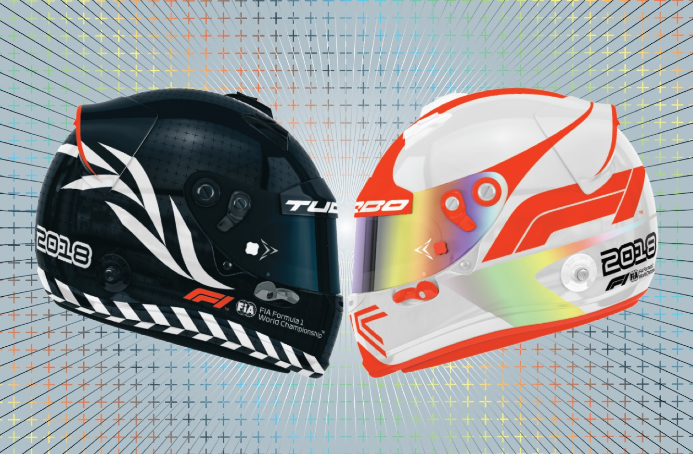

For those in creative pursuits, it can be either a dream or nightmare to balance personal work with more professional, stable employment. Geordie Wood, Photo Director at The FADER, manages to gracefully hold onto both. For the uninitiated, The FADER is an NYC-based music publication that also focuses on art, culture, and style.
